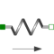

SpringLinear 1D translational spring |

|
Information
This information is part of the Modelica Standard Library maintained by the Modelica Association.
A linear 1D translational spring. The component can be connected either between two sliding masses, or between a sliding mass and the housing (model Fixed), to describe a coupling of the sliding mass with the housing via a spring.
Parameters (2)
| c |
Value: Type: TranslationalSpringConstant (N/m) Description: Spring constant |
|---|---|
| s_rel0 |
Value: 0 Type: Distance (m) Description: Unstretched spring length |
Connectors (2)
Used in Examples (8)
|
Modelica.Mechanics.MultiBody.Examples.Elementary Mass attached with a spring to the world frame |
|
|
Modelica.Mechanics.Translational.Examples Setting of initial conditions |
|
|
Modelica.Mechanics.Translational.Examples Use of arrows in Mechanics.Translational |
|
|
Modelica.Mechanics.Translational.Examples Use of damper models |
|
|
Modelica.Mechanics.Translational.Examples Oscillator demonstrates the use of initial conditions |
|
|
Modelica.Mechanics.Translational.Examples Use of model Stop |
|
|
Modelica.Mechanics.Translational.Examples Preload of a spool using ElastoGap models |
|
|
Modelica.Mechanics.Translational.Examples Demonstrate the modeling of heat losses |